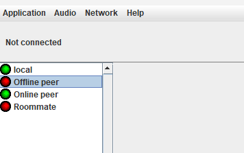
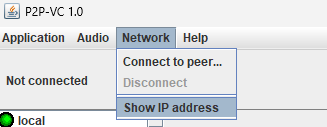
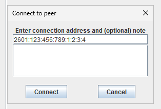

We're in the decline of the Information Age. The Internet was once blissful, bare-bones websites and plaintext emails, but
lately it has become a necessary evil due to the numerous bad actors and greedy companies pretending that universal human rights
legislation doesn't apply to the Internet. Instead, fierce corporatism has turned the Internet into a purely commercial domain,
and anything and everything we do on the Internet is the property of the multi-billion companies that run it.
I am among many that wish the Internet to return to a simpler time, when communication was largely peer-driven, and large-scale
servers with content moderation wasn't necessary to facilitate you having a good time with your friends over the Internet. If
phone calls don't need content restrictions, then why should online communication?
This project seeks to restore a piece of what we have lost, and allows you to chat with your friends without anyone else deciding
what you can and can't do with your computer, and your Internet connection. I hope for the Internet to be a better place
with or without this project, and we can all achieve this goal if we work together, and prefer the humble, free, open-source methods
of surfing the Internet, rather than flashy, monopolistic, restrictive mechanisms designed to ransom you your freedom.
Happy surfing!
To use P2P-VC, you need Java 21. You can install it from Oracle (as JDK) here.
Once you have Java 21 installed, download the latest version's JAR file from the Releases page. Double-click the JAR file, and it will set up its initial configuration.
The JAR file is a portable application, so keep it on your desktop, or somewhere easily accessible. You may create a shortcut to it on your desktop or in your Start Menu.
To update the application in the future, download the newer version's JAR file from the link above, and delete the old JAR file.
P2P-VC makes use of NAT hole-punching to open and maintain a connection between peers. If the peer is already in your contacts list (on the left), the application automatically attempts to maintain the link with the peer. The entry will display a green light if the connection was successful, or a red light if it couldn't be reached (see image below).
If the peer you want to connect to isn't in your contacts list, you need to exchange your IP addresses. Go to Network > Show IP address. (Note: if your web browser opens and an IPv6 address is available, use that one.)
Have your peer do the same, and exchange IP addresses. Then both of you will go to Network > Connect to peer... and enter the IP address you received from one another.
Once you connect, your peer will show up in your contacts list. Simply double-click on them to connect to them in the future.
I am committed to making this project accessible to as many people as I can. I understand Java is not as universal as it once
was, so I encourage you to port this application to platforms and systems that isn't supported here.
I will maintain a list of open-source, peer-to-peer communication projects related to
or derived from this project. If you create a derivative of this project or something similar, please create a pull request adding
your project's information to the list (docs/p2p-apps.txt). Please also be aware that this
project is licensed under GNU General Public License v3.